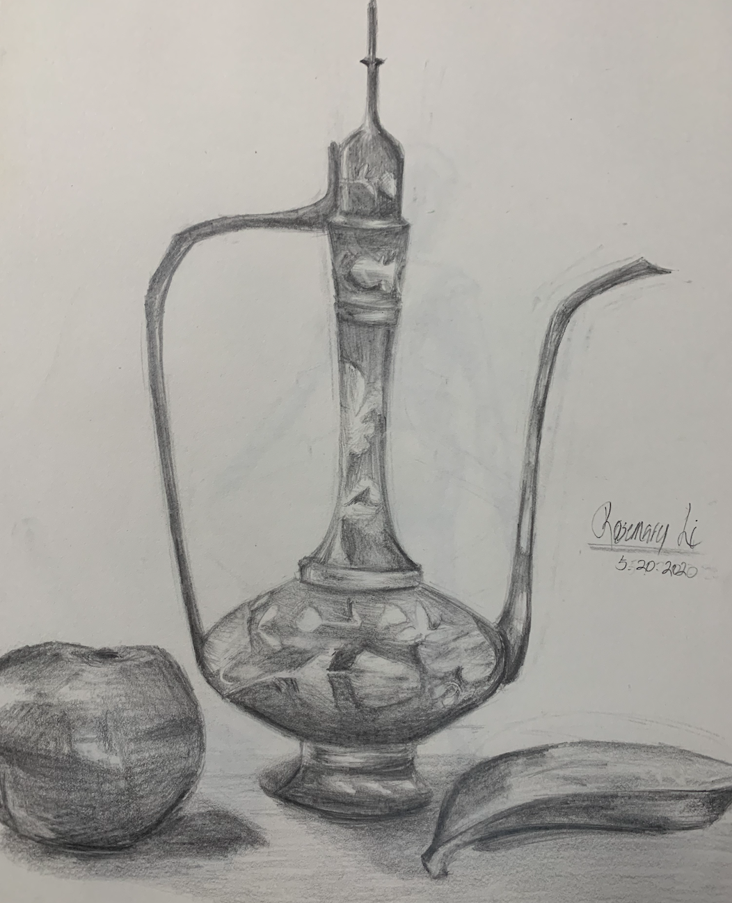
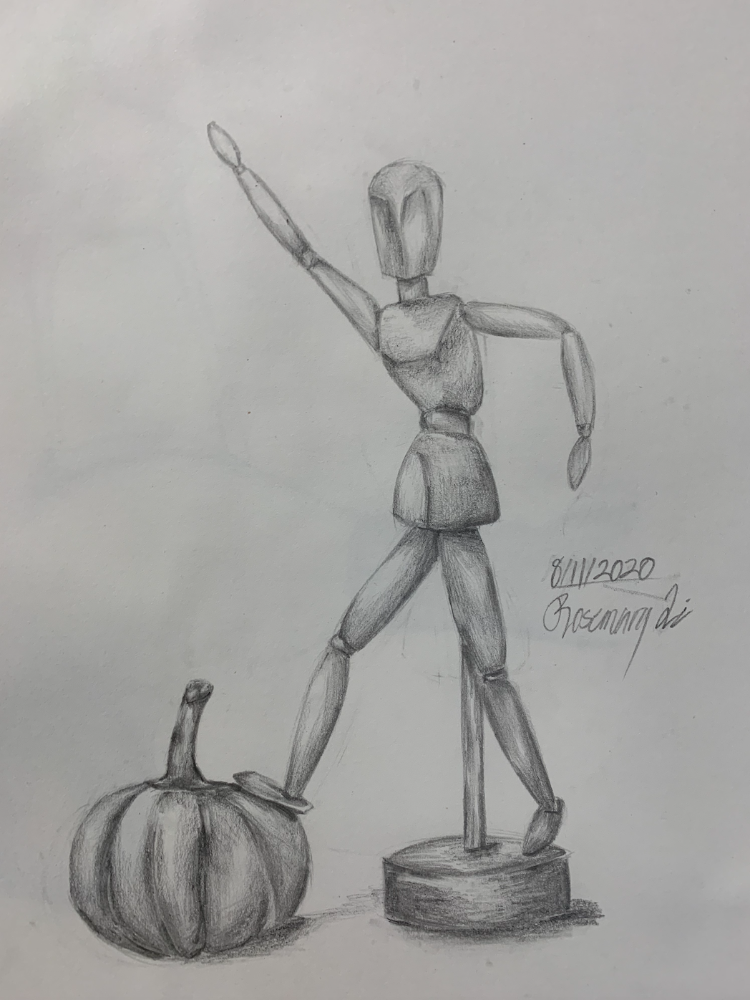

I’ve always loved doodling and painting since I was young; it’s something that I’ve brought with me up to these years. Although I don’t have the kind of time that I used to have, I still try to make space in my schedule for just sitting down, taking a break and doodling something. I mainly sketch, as it helps me let loose and find peace at mind. I may not have as much experience as some of my peers may nowadays, but I still recommend sketching as a form of relaxation for anyone, regardless of skill. Here are some of my works:


→Music
I picked up piano playing when I was in second grade, but it didn’t last for long due to how much I rejected the whole idea at first. After moving back to Canada, I was persuaded to give it another try. I had then truly started to play wholeheartedly and I have never regretted my decision to start learning again. Though I have never done an exam since I mainly play piano as a hobby and something to pass my time with, and I have not been learning as fast and my advancement from where I once was is not at all impressive, I’m glad that I still held on to the skill as music is one of my passions, and I’m proud of my improvement from over the course of four years or so. The second instrument I play is the violin, and it’s a fun thing to help me add a bit more variety to the only skillset I’m familiar with. I’ve met many incredible people since I first started playing the violin and joined the orchestra in middle school, which is why I continued to play the violin even now as the instrument holds sentimental value to me; it brings me nostalgia and reminds me of faces I haven’t seen in a long time.
→Creative Writing
Often I find myself stressed without a clear reason, and I tend to disregard and shove away my emotions for the most part without being conscious of it. Writing is one of my best outlets for stress and anxiety, and I see it as a form of art. When I struggle with identifying what I feel, I find that the best solution is to simply write it all out. I interest myself with all sorts of unfamiliar words while reading to pick up new and better writing strategies, and I look up to those who can truly add the art aspect of writing into their works. I believe that anyone can write if they truly wanted to; our minds can come up with the most incredible things, and we should take the chance to hold on to them as they pass by.